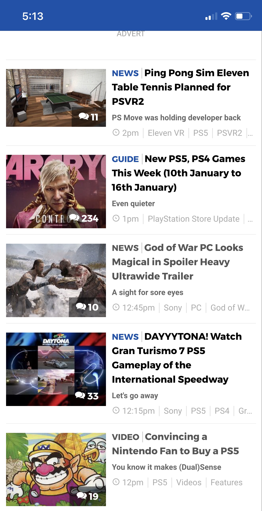

Visual Heiaerchy
PushSquare
PushSquare.com The Visual heiharchy is clean and simple. The picture for the article is on the left, taking up a third of the space and starting the summary of the article. Next your eyes move over to the text to the right, which first tells the type of article it is before showing the headline, which takes up most of the text space, with the sub-header right below it, a natural progession along with the time it was posted and extra catagroy informaiton. The articles are also presented cleanly and flow smoothly in a chronologicla manner top to bottom.
White Space and Clean Design
PushSquare
PushSquare.comThere is a clean padding between lines of text, between a headline and sub-headline. It makes it easy to read and distinguish between lines of text, different articles, and moving the eyes from the picture to the text.
PARC: Contrast
PushSquare
PushSquare.comThere is a clean readable contrast that draws the eyes appropriately. The simple white background makes all the text stand out, while the article type draws the eyes with a blue that pops a bit, leading the eyes to the dark black headlines right next to it. The sub-headline is in a light gray text that can be skipped or is the next place the eyes are drawn to if you want more information before clicking on an article. The time and sub-catagories in an even lighter text that keeps information present while easily skippable so you can quickly get to the next headline.